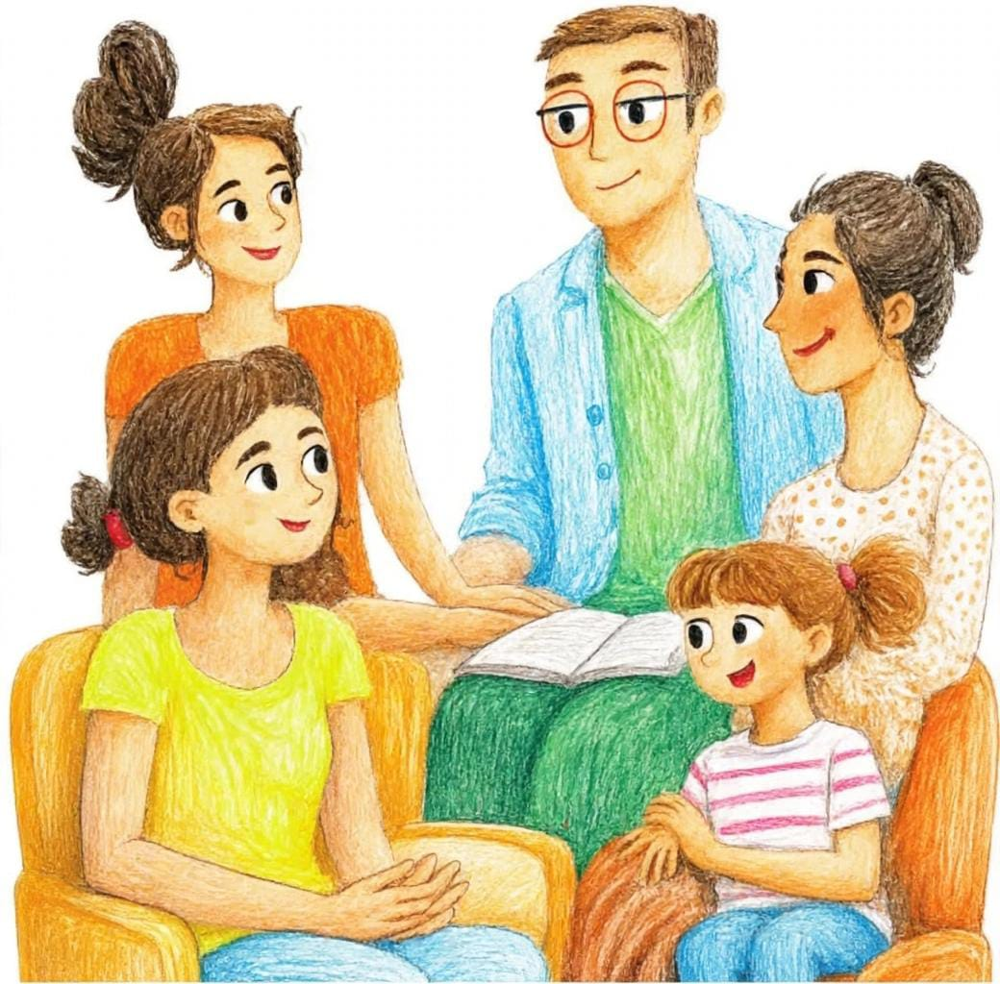
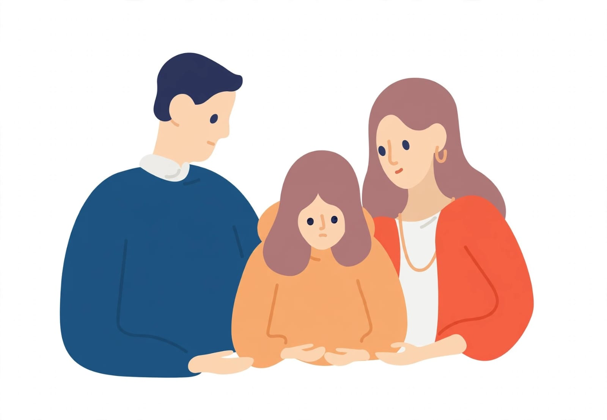

❝- Descanse: Duerma lo más que pueda y tómese 10 minutos al día sin celular.
- Ponga límites: No tiene que poder con todo. Pida ayuda a familia, escuela o vecinos.
- Cuide su cuerpo: Coma a sus horas, tome agua, muévase un poco.
- Hable de lo que siente: Con su pareja, un amigo o un profesional. Sus hijos aprenden viendo cómo usted se cuida.❞
❝- Escuche sin juzgar: Cuando le cuente algo, no lo interrumpa ni lo minimice con "eso no es nada".
- Ponga nombre a la emoción: "Veo que estás enojado / triste / nervioso". Eso les ayuda a entenderse.
- Mantenga rutinas: Hora de dormir, de comer y de tarea. La rutina da seguridad.
- Esté presente: 15 minutos de atención total valen más que todo el día distraído.
- Valide, no compare: Evite "tu hermano sí puede". Mejor: "entiendo que te costó, ¿cómo te ayudo?".❞

❝- Se aísla, ya no quiere jugar o ver a sus amigos
- Cambios bruscos en sueño, apetito o calificaciones
- Llora mucho, se enoja fácil o dice "nadie me entiende"
- Se lastima o dice que no quiere vivir❞

- "Te creo, aquí estoy para ti"
- "No tienes que pasar esto solo(a)"
- "Vamos a buscar ayuda juntos"
- "No llores por eso"
- "Échale ganas, eso no es nada"
- "De eso no se habla"